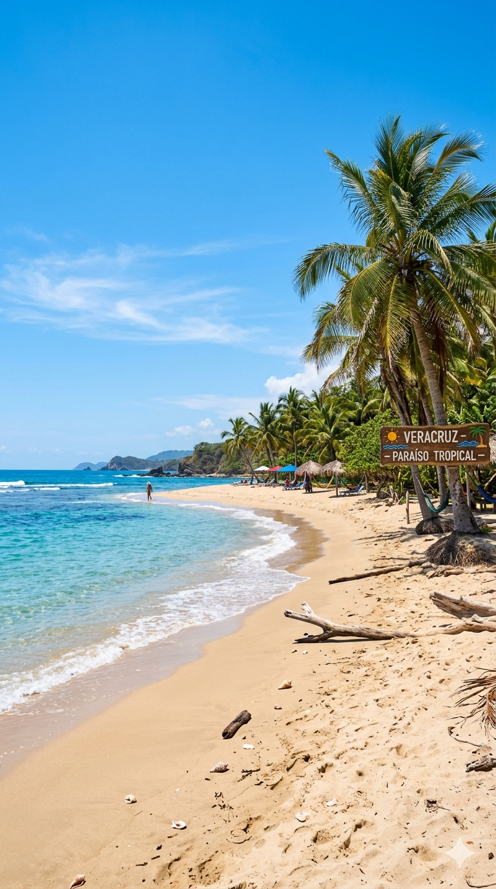
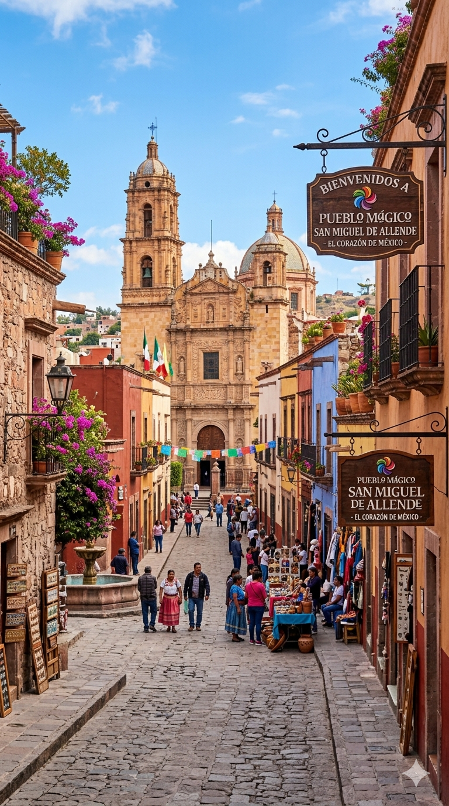
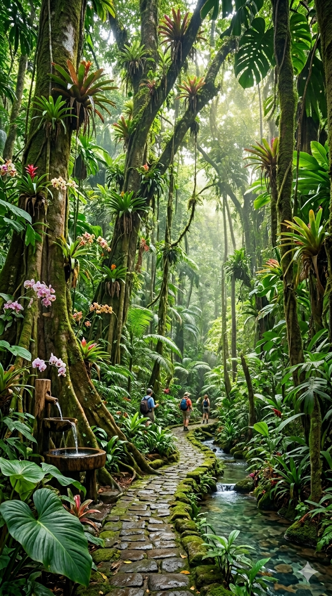

Descubre la magia, cultua y aventura del estado
más alegre de México a através de una mirada
contemporánea
Escenarios Inolvidables
Desde la brisa salada del Golfo hasta la neblina mística de la montaña, Veracruz
ofrece contrastes que cautivan el alma

Playas del Golfo
Aguas cálidas y arena fina donde el horizonte no
tiene fin.

Pueblos Mágicos
Caminos empedrados que guardan el aroma del
café y la historia colonial.

Selva y Aventura
El corazón verde de México donde la adrenalina se
encuentra con lo salvaje.
Identidad y Patrimonio
HERENCIA Y RAÍCES
Cinco Siglos de
Historia Viva
Como la puerta de entrada de América, Veracruz custodia
tesoros que narran el encuentro entre dos mundos. El baluarte
que resistió en el tiempo.
Sabores del puerto
Gatronomía de Mar
Del famoso 'Pescado a la Veracruzana' al café de altura. Un
festín que fusiona continentes.
Guía del Viajero
Información esencial para que tu travesía por tierras jarochas sea perfecta de
principio a fin.
Mejor época
De noviembre a mayo
encontrarás el clima más fresco y
seco, ideal para explorar sin el
calor intenso del verano.
Cómo moverse
En el puerto, el transporte público
es eficiente. Para los Tuxtlas o la
montaña, recomendamos rentar
un auto o contratar guías.
Qué empacar
Ropa de lino y algodón, protector
solar biodegradable y repelente.
Si vas a Xalapa o Coatepec, un
suéter ligero es vital.
Costumbres
La propina estándar es del 10-
15%. Los jarochos son
sumamente amables; no dudes
en pedir direcciones o
recomendaciones.
Asistencia al
Viajero
SERVICIOS DE EMERGENCIA
24/7
Información de contacto vital para su
seguridad y tranquilidad durante su visita a
Veracruz. Recomendamos guardar estos
números en sus contactos.
Central de Emergencias:
911
POLICÍA TURÍSTICA
911
PROTECCIÓN CIVIL
229 200 2270
BOMBEROS
229 932 3600
CRUZ ROJA
229 923 4405
ÁNGELES VERDES
078
TRÁNSITO ESTATAL
229 937 6610
AMBULANCIAS (SAMUV)
229 931 0113
CFE (ELECTRICIDAD)
071
AGUA (GRUPO MAS)
229 454 6550
FISCALÍA GENERAL
228 843 6000
ATENCIÓN TURÍSTICA
800 201 7493
GUARDIA NACIONAL
088
CAPITANÍA DE PUERTO
229 931 0352
HOSPITAL DE ALTA ESP.
229 931 1011
AEROPUERTO (ASUR)
229 934 9008